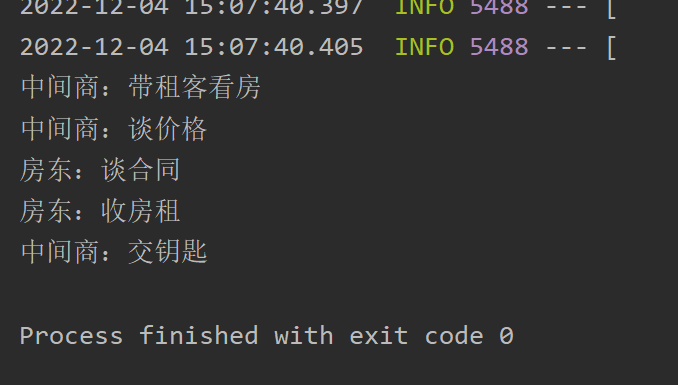

本文不涉及Spring AOP原理
Spring AOP 简介
面向切面编程（AOP）是 Spring 最为重要的功能之一了，在数据库事务中切面编程被广泛使用。
AOP 即 Aspect Oriented Program 面向切面编程
首先，在面向切面编程的思想里面，把功能分为核心业务功能，和周边功能。
- 所谓的核心业务，比如登陆，增加数据，删除数据都叫核心业务
- 所谓的周边功能，比如性能统计，日志，事务管理等等
周边功能在 Spring 的面向切面编程AOP思想里，即被定义为切面
在面向切面编程AOP的思想里面，核心业务功能和切面功能分别独立进行开发，然后把切面功能和核心业务功能 “编织” 在一起，这就叫AOP
AOP 的目的
AOP能够将那些与业务无关，却为业务模块所共同调用的逻辑或责任（例如事务处理、日志管理、权限控制等）封装起来，便于减少系统的重复代码，降低模块间的耦合度，并有利于未来的可拓展性和可维护性。
AOP 当中的概念：
- 切入点（Pointcut）
在哪些类，哪些方法上切入（where） - 通知（Advice）
在方法执行的什么实际（when:方法前/方法后/方法前后）做什么（what:增强的功能） - 切面（Aspect）
切面 = 切入点 + 通知，通俗点就是：在什么时机，什么地方，做什么增强！ - 织入（Weaving）
把切面加入到对象，并创建出代理对象的过程。（由 Spring 来完成）
Demo
需求说明
为了更好的说明 AOP 的概念，我们来举一个实际中的例子来说明：

在上面的例子中，包租婆的核心业务就是签合同，收房租，那么这就够了，灰色框起来的部分都是重复且边缘的事，交给中介商就好了，这就是 AOP 的一个思想：让关注点代码与业务代码分离！
代码实现（使用注解）
引入依赖
Spring Boot使用AOP需要添加spring-boot-starter-aop依赖，如下：
<dependency> |
不需要再添加aspectjweaver的依赖了，因为spring-boot-starter-aop包含了aspectjweaver，并且版本是较新的版本，如果在添加老版本（如1.5.4）启动会报错。
编写核心业务Bean
也就是连接点
package com.example.test_spring.service; |
创建切面
Spring采用@AspectJ注解对POJO进行标注，该注解表明该类不仅仅是一个POJO，还是一个切面。切面是切点和通知的结合，那么定义一个切面就需要编写切点和通知。在代码中，只需要添加@Aspect注解即可。
定义切点
切点是通过@Pointcut注解和切点表达式定义的。
@Pointcut注解可以在一个切面内定义可重用的切点。
由于Spring切面粒度最小是达到方法级别，而execution表达式可以用于明确指定方法返回类型，类名，方法名和参数名等与方法相关的部件，并且实际中，大部分需要使用AOP的业务场景也只需要达到方法级别即可，因而execution表达式的使用是最为广泛的。如图是execution表达式的语法：
execution表示在方法执行的时候触发。以“”开头，表明方法返回值类型为任意类型。然后是全限定的类名和方法名，“”可以表示任意类和任意方法。对于方法参数列表，可以使用“..”表示参数为任意类型。如果需要多个表达式，可以使用“&&”、“||”和“!”完成与、或、非的操作。
定义通知
通知有五种类型，分别是：
前置通知（@Before）：在目标方法调用之前调用通知
后置通知（@After）：在目标方法完成之后调用通知
环绕通知（@Around）：在被通知的方法调用之前和调用之后执行自定义的方法
返回通知（@AfterReturning）：在目标方法成功执行之后调用通知
异常通知（@AfterThrowing）：在目标方法抛出异常之后调用通知
本例中，分别使用前置通知实现“看房”和“谈价格”功能，使用后置通知实现“交钥匙”功能。这样一个切面就定义完成，下面是代码
code
package com.example.test_spring.aspect; |
测试
|

环绕通知
看到上述的需求也可以使用环绕通知，他会在方法执行前后执行。
改写Broker.java代码如下：
package com.example.test_spring.aspect; |
运行测试代码，结果依然正确
Ref